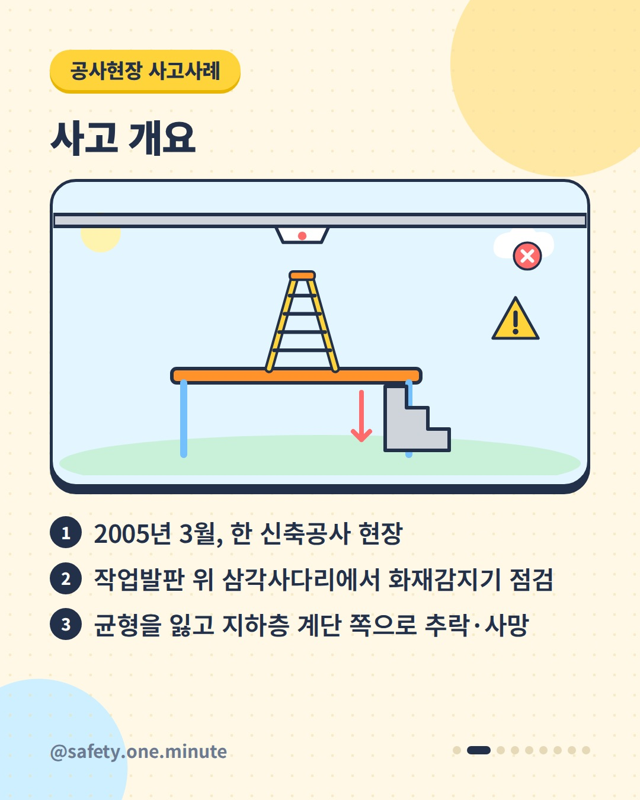
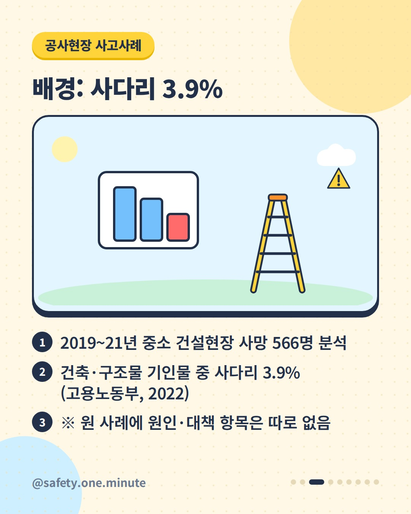
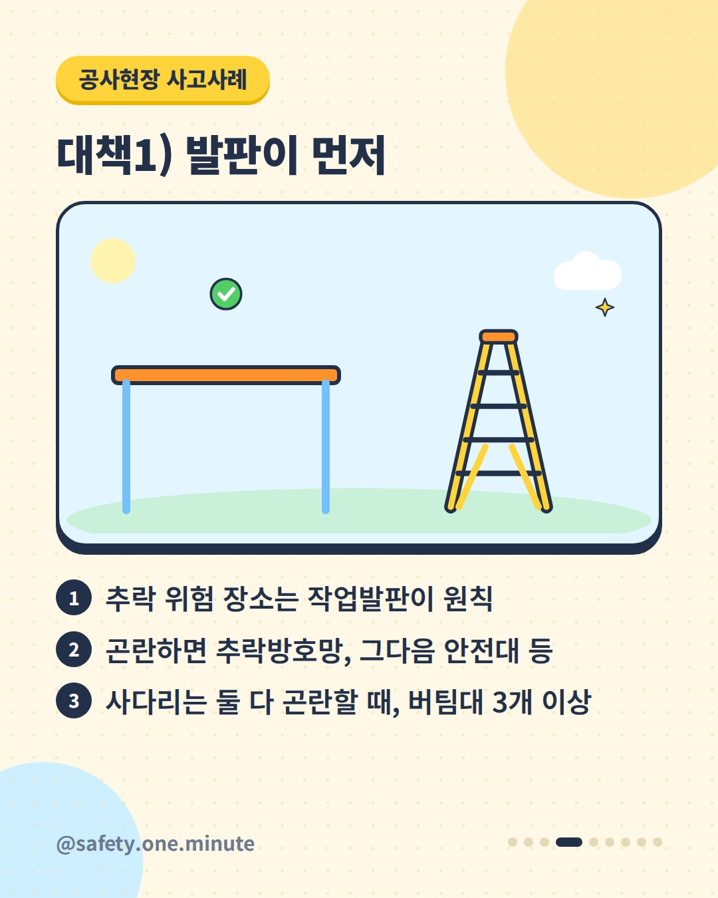
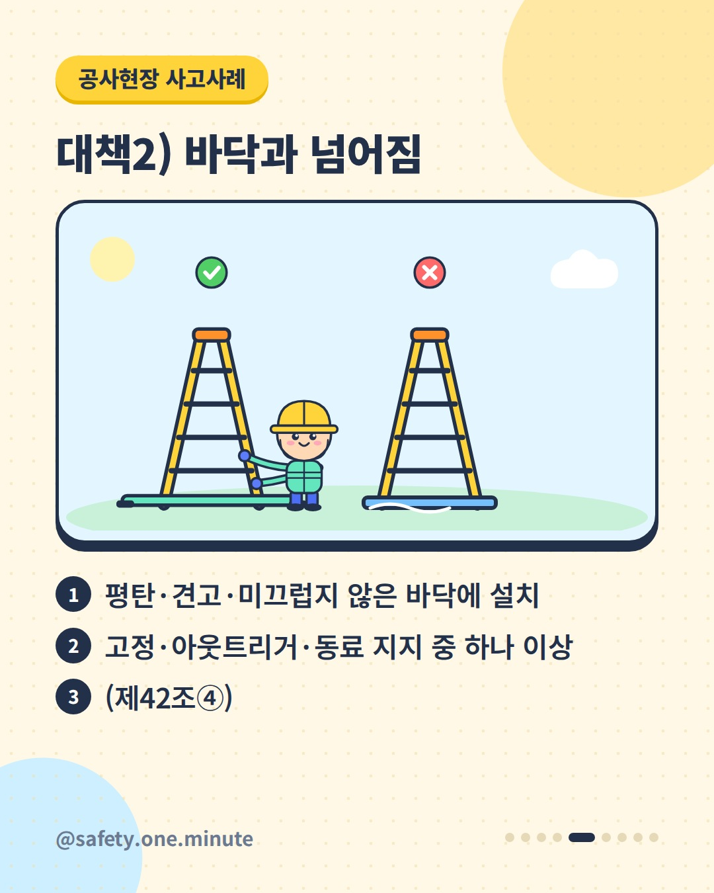
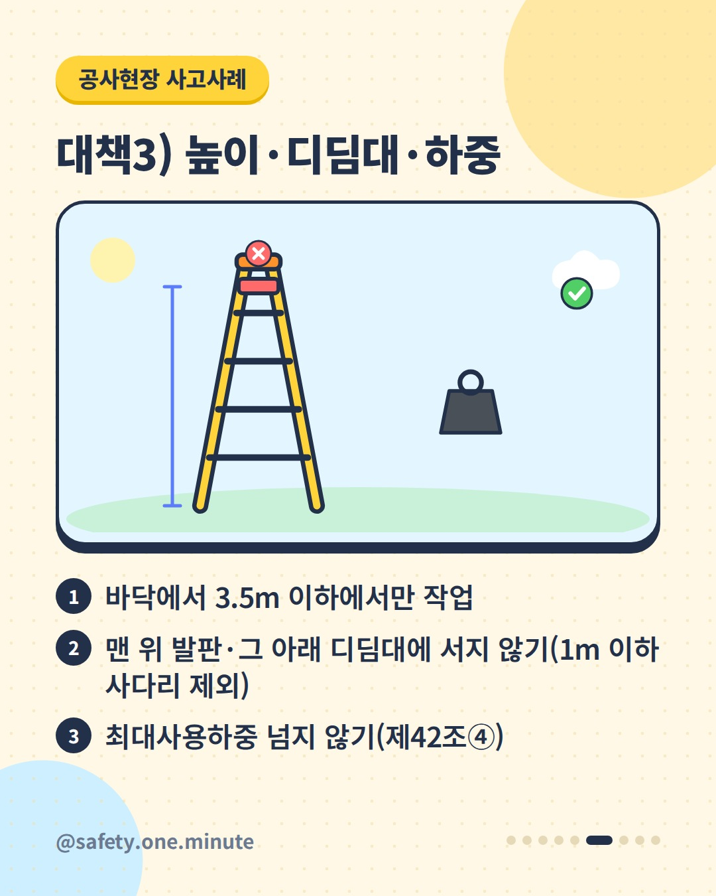
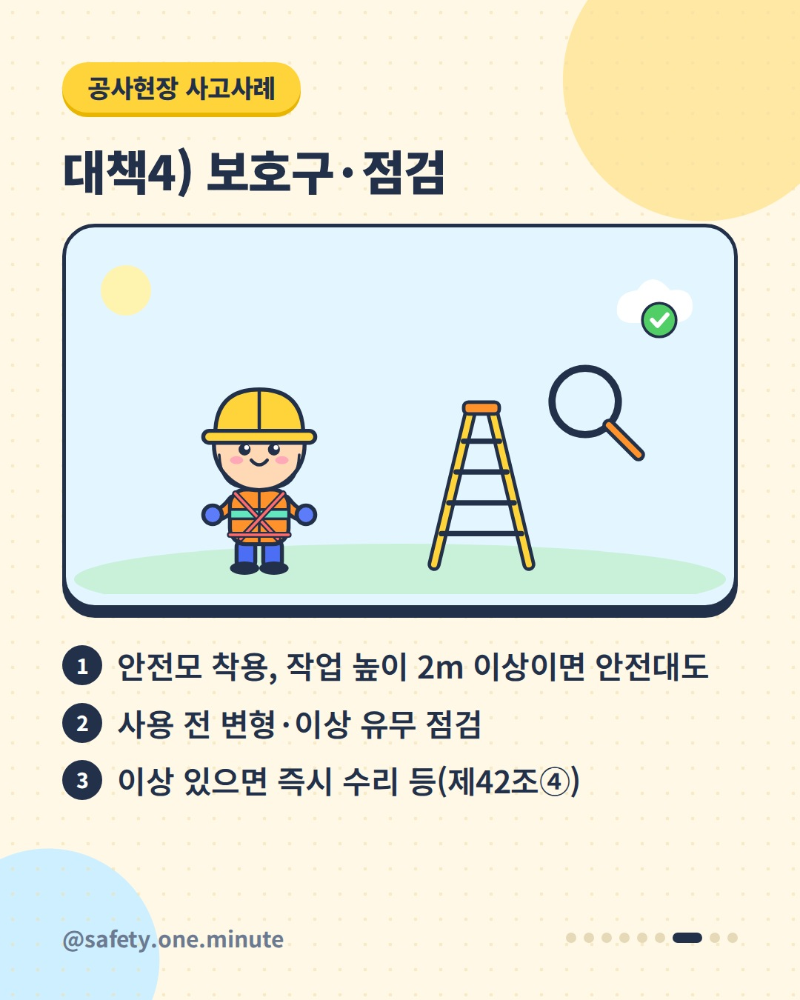
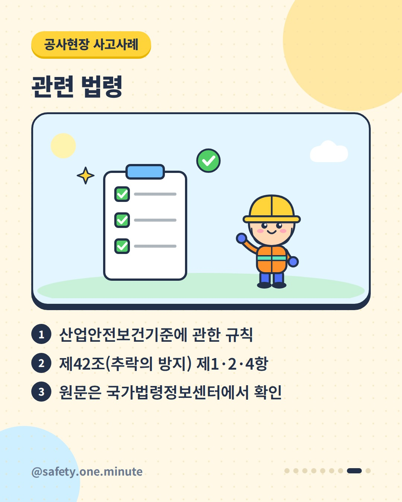
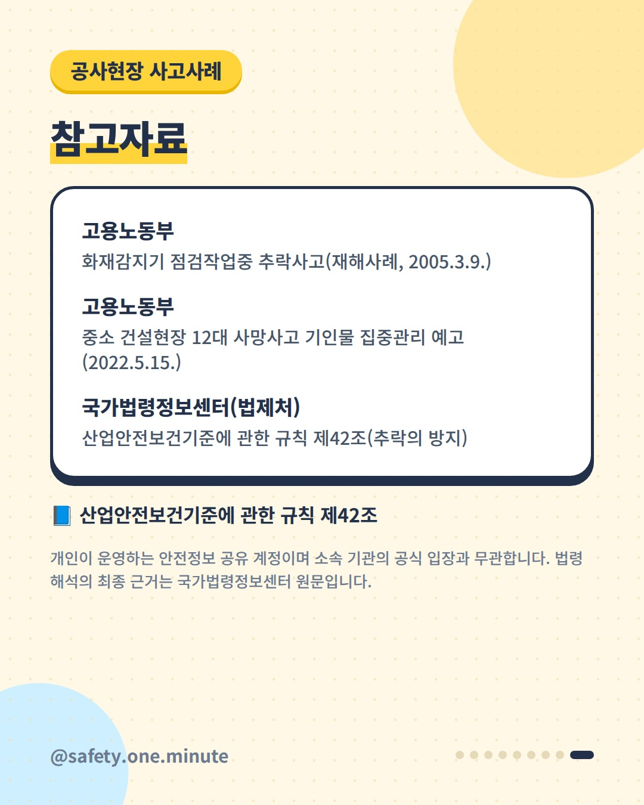

사다리, 몇 칸까지? — 9장 (4:5)








캡션
사다리 맨 윗칸까지 올라가서 작업해도 될까요? 고용노동부가 공개한 재해사례입니다(2005년). 한 신축공사 현장에서 작업자가 지하1층과 지상1층 사이 작업발판 위에 삼각사다리를 놓고 화재감지기를 점검하다 균형을 잃고 지하1층 계단 쪽으로 떨어져 숨졌습니다(원 사례에 원인·대책 항목은 따로 없습니다). 고용노동부가 2019~2021년 중소 건설현장 사망자 566명을 분석한 결과(2022), 사다리는 건축·구조물 기인물의 3.9%였습니다. 현행 산업안전보건기준에 관한 규칙 제42조는 이렇게 정하고 있습니다. 1) 추락 위험 장소는 작업발판이 원칙, 곤란하면 추락방호망, 그것도 곤란하면 안전대 등 2) 작업발판·추락방호망이 모두 곤란할 때 버팀대 3개 이상으로 안정적으로 서는 이동식 사다리 사용 가능 3) 평탄·견고·미끄럽지 않은 바닥, 고정·아웃트리거·동료 지지 중 하나 이상 4) 바닥에서 3.5m 이하에서만 작업, 맨 위 발판과 그 아래 디딤대에 서지 않기(1m 이하 사다리 제외), 최대사용하중 지키기 5) 안전모 착용(작업 높이 2m 이상이면 안전대도), 사용 전 변형·이상 점검 ※ 사고 당시 법령과 현행 법령은 다를 수 있습니다(이동식 사다리 기준은 2024.6.28. 신설). 세부 요건은 법령 원문(2025.9.1. 시행본 기준)을 확인하세요. 출처: - 고용노동부 – 화재감지기 점검작업중 추락사고 재해사례(2005) - 고용노동부 – 중소 건설현장 12대 사망사고 기인물(2022) - 국가법령정보센터(법제처) – 산업안전보건기준에 관한 규칙 제42조 개인이 운영하는 안전정보 공유 계정이며 소속 기관의 공식 입장과 무관합니다. 법령 해석의 최종 근거는 국가법령정보센터 원문입니다. #사다리 #추락사고 #이동식사다리 #건설안전 #사고사례 #안전보건규칙